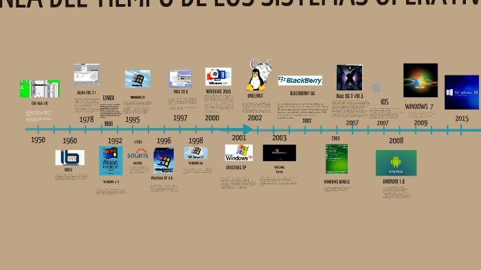

En el comienzo de la informática se utilizaba directamente la consola de comandos, por lo que hasta los años 50 no aparecerían los primeros sistemas operativos.
En esta de decada se implementa el primer sistema operativo de la historia en 1956, el cual se basaba en ejecutar un programa nada más terminar el anterior.
A partir de esta epoca empiezan a aparecer más sistemas operativos y principalmente los sistemas operativos multiprogramación. Donde debido a la programación, la CPU cambiaba de programa en programa cuando termina la finalización de una operación.
En esta epoca se empiezan a desarrollar nuevos Sistemas Operativos. Como el Atlas Supervisor, OS/360, Multics, Unix y los lenguajes de programación Prolog y Smalltalk. Siendo lenguajes logico y orientados a objetos respectivamentes.
Desde esta decada los Sistemas Operativos se empezaron a ver con interfacez graficicas muy simples. Pero tenemos algunos reconocidos como MS-DOS, Macintosh, de Apple, y menos conocidas AmigaOS y OS/2.
En esta decada se crea GNU/Linux como un sistema inspirado en UNIX pero como software libre. Y empezamos tambien con los Windows por Microsoft.
